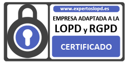

Contáctenos
Política de Privacidad
“INSTALACIONES SAMAVE” se encuentra profundamente comprometido con el cumplimiento de la normativa española de protección de datos de carácter personal, y garantiza el cumplimiento íntegro de las obligaciones dispuestas, así como la implementación de las medidas de seguridad dispuestas en el art. 9 de la Ley 15/1999, de Protección de Datos de Carácter Personal (LOPD) y su Reglamento de Desarrollo, así como para el cumplimiento del Reglamento General de Protección de Datos (RGPD) (UE) 2016/679. De conformidad con estas normativas, informamos que la utilización de nuestra página web puede requerir que se faciliten ciertos datos personales a través de formularios de registro o contacto, o mediante el envío de emails, y que éstos serán objeto de tratamiento por “INSTALACIONES SAMAVE”, Responsable del tratamiento, cuyos datos son:
- Denominación Social: INSTALACIONES SAMAVE SL
- CIF / NIF / NIE: B86989621
- Domicilio Social: Avda. Comunidad de Madrid, 106 - P6, Local - 28330 - San Martín de la Vega (Madrid)
- Teléfono: 91.895.84.04
- eMail: instalaciones@samave.es
OBTENCIÓN Y TRATAMIENTO DE DATOS
“INSTALACIONES SAMAVE”, como Responsable del Tratamiento, tiene el deber de informar a los usuarios de su sitio web acerca de la recogida de datos de carácter personal que pueden llevarse a cabo, bien sea mediante el envío de correo electrónico o al cumplimentar los formularios incluidos en el sitio web. Se obtendrán únicamente los datos precisos para poder realizar el servicio contratado, o para poder responder adecuadamente a la petición de información realizada por el Usuario.
Formularios de contacto/email
Finalidad: Dar contestación a su solicitud de información realizada a través de nuestro/s formulario/s de contacto.
Legitimación: La base jurídica que legitima este tratamiento es el consentimiento del Usuario, que podrá revocar en cualquier momento.
Cesión de datos: Los datos personales serán tratados a través de servidores gestionados por Soluciones Corporativas IP (SCIP), que tendrá la consideración de Encargado del Tratamiento.
MEDIDAS DE SEGURIDAD
Se informa a los usuarios de que, en “INSTALACIONES SAMAVE”, se han adoptado las medidas técnicas y organizativas conforme a lo dispuesto en la normativa de protección de datos. Los datos personales que se recogen en los formularios son objeto de tratamiento, únicamente, por parte del personal de “INSTALACIONES SAMAVE” o de los Encargados del Tratamiento aquí establecidos.
Se han adoptado las medidas de seguridad adecuadas a los datos que se facilitan y, además, se han instalado todos los medios y medidas técnicas a su alcance para evitar la pérdida, mal uso, alteración, acceso no autorizado y robo de los datos que nos facilitan.
VERACIDAD DE LOS DATOS
El Usuario manifiesta que todos los datos facilitados por él son ciertos y correctos y se compromete a mantenerlos actualizados. El usuario responderá de la veracidad de sus datos y será el único responsable de cuantos conflictos o litigios pudieran resultar por la falsedad de los mismos. Es importante que, para que podamos mantener los datos personales actualizados, el usuario informe a “INSTALACIONES SAMAVE” siempre que haya habido alguna modificación en los mismos.
EJERCICIO DE DERECHOS
La LOPD y el RGPD conceden a los interesados la posibilidad de ejercer una serie de derechos relacionados con el tratamiento de sus datos personales. Para ello, el usuario deberá dirigirse, aportando documentación que acredite su identidad (DNI o pasaporte), mediante correo electrónico a instalaciones@samave.es, o bien mediante comunicación escrita a la dirección que aparece en nuestro Aviso Legal. Dicha comunicación deberá reflejar la siguiente información: nombre y apellidos del Usuario, la petición de solicitud, el domicilio y los datos acreditativos.
El ejercicio de derechos deberá ser realizado por el propio Usuario. No obstante, podrán ser ejecutados por una persona autorizada como representante legal del Usuario, aportándose la documentación que acredite dicha representación.
El usuario podrá solicitar el ejercicio de los derechos siguientes:
- Derecho a solicitar el acceso a los datos personales.
- Derecho a solicitar su rectificación (en caso de que sean incorrectos) o supresión.
- Derecho a solicitar la limitación de su tratamiento, en cuyo caso únicamente serán conservados por “INSTALACIONES SAMAVE” para el ejercicio o la defensa de reclamaciones.
- Derecho a oponerse al tratamiento: “INSTALACIONES SAMAVE” dejará de tratar sus datos, salvo que por motivos legítimos o el ejercicio o la defensa de posibles reclamaciones se tengan que seguir tratando.
- Derecho a la portabilidad de los datos: en caso de que quiera que sus datos sean tratados por otra empresa, “INSTALACIONES SAMAVE” le facilitará la portabilidad de sus datos en formato exportable.
En el caso de que se haya otorgado el consentimiento para alguna finalidad específica, el usuario tiene derecho a retirar el consentimiento en cualquier momento, sin que ello afecte a la licitud del tratamiento basado en el consentimiento previo a su retirada.
Si un usuario considera que hay un problema con la forma en que “INSTALACIONES SAMAVE” está manejando sus datos, puede dirigir sus reclamaciones al Responsable de Seguridad o a la autoridad de protección de datos que corresponda, siendo la Agencia Española de Protección de Datos la indicada en el caso de España.
CONSERVACIÓN DE LOS DATOS
Los datos de carácter personal de los Usuarios que usen el formulario de contacto o de alta en el boletín serán tratados durante el tiempo estrictamente necesario para atender a la solicitud de información, o hasta que se revoque el consentimiento otorgado.
Por su parte, los datos de carácter personal del Cliente serán tratados hasta que finalice la relación contractual. El período de conservación de los datos personales será el mínimo necesario, pudiendo mantenerse hasta:
4 años: Ley sobre Infracciones y Sanciones en el Orden Social (obligaciones en materia de afiliación, altas, bajas, cotización, pago de salarios…); Arts. 66 y sig. Ley General Tributaria (libros de contabilidad…)
5 años: Art. 1964 Código Civil (acciones personales sin plazo especial)
6 años: Art. 30 Código de Comercio (libros de contabilidad, facturas…)
10 años: Art. 25 Ley de Prevención del Blanqueo de Capitales y Financiación del Terrorismo.
Sin plazo: datos desagregados y anonimizados.
En el caso de que se traten datos de candidatos (C.V.), “INSTALACIONES SAMAVE” podrá mantener almacenado su currículo un máximo de dos años para incorporarlo a futuras convocatorias, a menos que el candidato se manifieste en contrario.
CONFIDENCIALIDAD
La información suministrada por el cliente tendrá, en todo caso, la consideración de confidencial, sin que pueda ser utilizada para otros fines distintos a los aquí descritos. “INSTALACIONES SAMAVE” se obliga a no divulgar ni revelar información sobre las pretensiones del Usuario, los motivos del asesoramiento solicitado o la duración de su relación con éste.
VALIDEZ
Esta política de privacidad y de protección de datos ha sido redactada por EXPERTOS LOPD®, empresa de RGPD, a día 17 de diciembre de 2018, y podrá variar en función de los cambios de normativa y jurisprudencia que se vayan produciendo, siendo responsabilidad del titular de los datos la lectura del documento actualizado, en orden a conocer sus derechos y obligaciones al respecto en cada momento.
